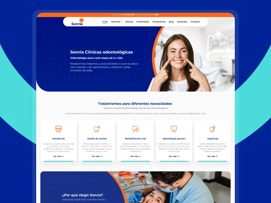
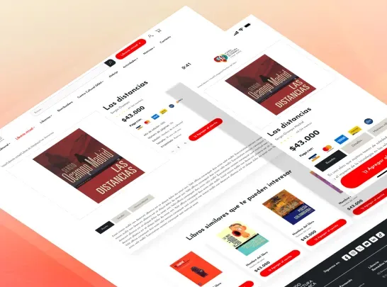
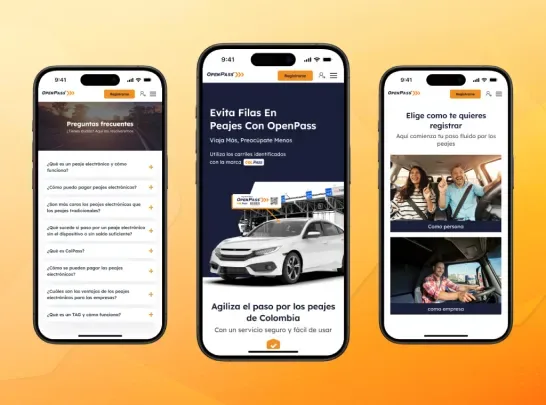
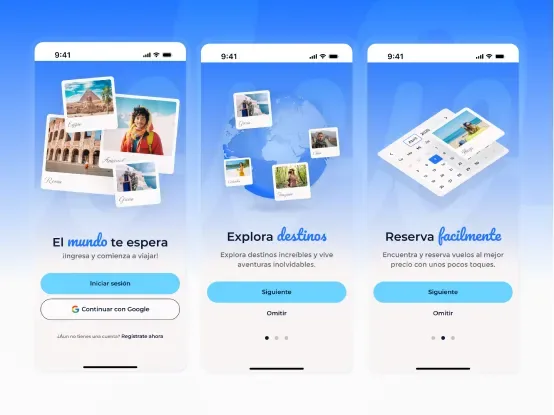

Proyectos destacados

Rediseño UX/UI del sitio web de Sonría
Transformando la experiencia digital y la estrategia de captación de la red odontológica líder en Colombia.

Rediseño del sitio web del Fondo de Cultura Económica en Colombia
Diseñé una experiencia digital más accesible para quienes buscan explorar o comprar libros, mejorando la usabilidad y estética del sitio para conectar con distintos públicos.

Rediseño del sitio web y la plataforma de OpenPass
Optimicé la experiencia digital de OpenPass para hacerla más clara, intuitiva y eficiente, facilitando la administración del tag y fortaleciendo su imagen profesional.

Diseño de la app WorldTicket para compra de entradas de cine
Diseñé una experiencia móvil intuitiva que simplifica la búsqueda de películas, la selección de funciones y el proceso de pago, enfocándome en reducir fricción y mejorar la claridad durante todo el flujo de compra.